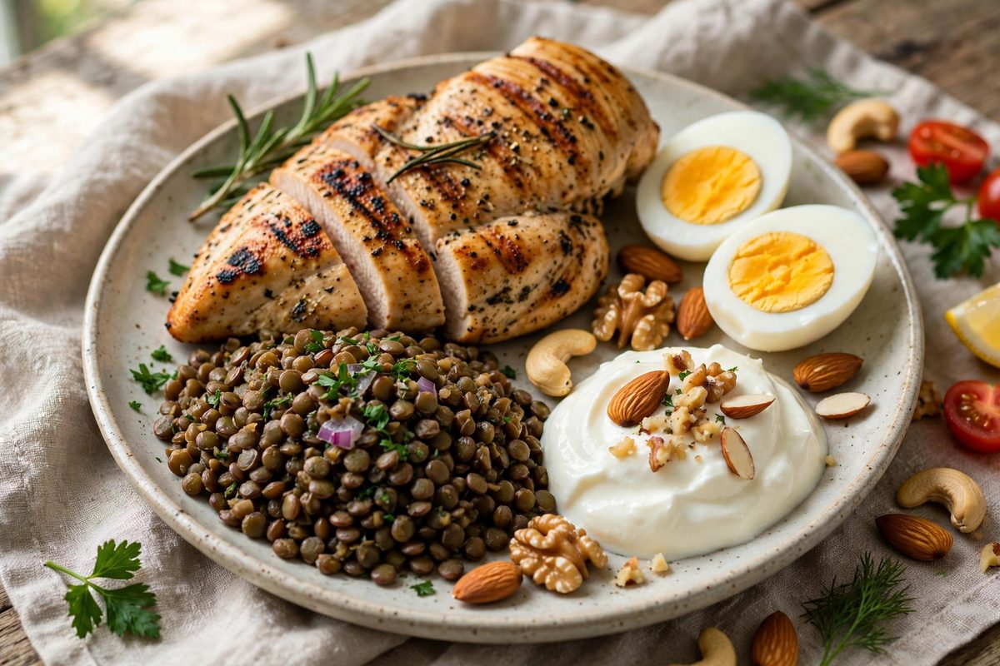

Practical diet plans and calculators for life in the USA.

A high-protein diet helps many Americans stay full and protect muscle while losing weight, but the protein still needs to come from good sources. In this guide we explain what makes it work, what you need, and how to get a reliable result at home, step by step, without any special equipment or hard-to-find ingredients.
The heart of High-Protein Diet is balance. Every good version of it gets the same few things right: protein at every meal, including breakfast, lean meats, fish, eggs, Greek yogurt and beans, and protein spread through the day, not in one meal. When those are in place, the rest of the dish almost takes care of itself, and small differences in technique matter far less than people fear. Spend your attention on the foundation, and the finishing touches will be easy.
Before you start, gather the key elements. The four things that matter most for High-Protein Diet are:
Beyond those four, you will need only ordinary kitchen basics: a good knife, a board, a pan or pot, and a little patience. If you are missing one of the four key items, it is usually better to wait until you have it than to substitute something that changes the whole character of the dish. A smaller, well-made batch beats a large, compromised one every time, and you will learn more from it too.
The best tip for High-Protein Diet is to taste as you go and to keep notes on what you change. The first time you make it, follow the method closely; the second time, adjust one thing — a little more lean meats, fish, eggs, Greek yogurt and beans, a little less heat, a different timing — and see what happens. That is how a recipe becomes yours. Fresh ingredients help more than any technique, and protein at every meal, including breakfast in particular is worth buying well. Store leftovers in a sealed container in the fridge and reheat gently.
Most people can make High-Protein Diet in about 30 to 60 minutes once they have the ingredients ready. Your first attempt may take a little longer, and that is normal — the second time is always faster, because you know the order of the steps.
Yes. High-Protein Diet is a good beginner project as long as you follow the steps in order and do not rush the preparation. Start with the simplest version, using protein at every meal, including breakfast and lean meats, fish, eggs, Greek yogurt and beans, and add variations once you are comfortable.
The most common mistake is rushing the base and over-seasoning at the start. It is easy to add more flavour, but very hard to take it away, so season gradually, taste often, and remember that protein spread through the day, not in one meal does most of the work.